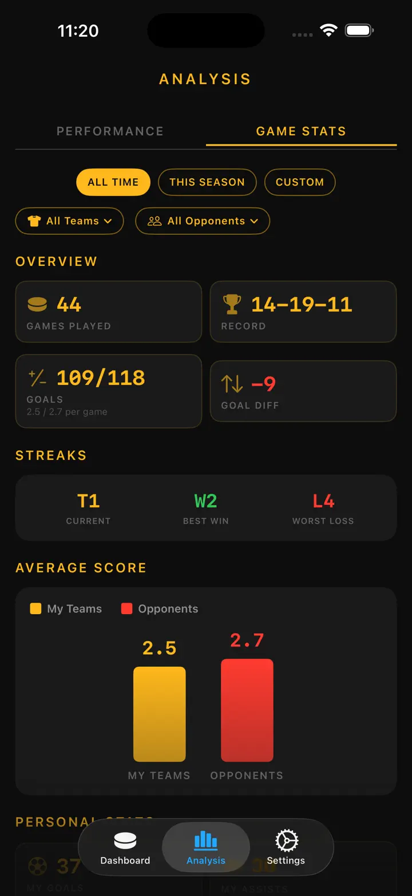
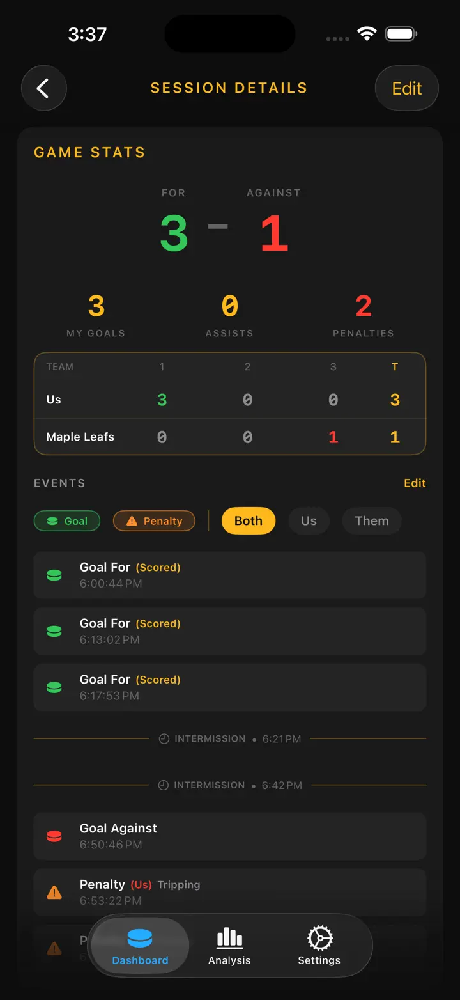

Ice Time Track
Hokej Striedania Tréning
Automatické sledovanie času na ľade s Apple Watch – teraz so sledovaním výstroje a pripomienkami brúsenia korčúľ. Po zápase si pozrite striedania, štatistiky a zdravie.
Stiahnuť v App Store
O aplikácii
Vaše striedania. Sledované automaticky.
Ice Time Track používa Apple Watch na rozpoznanie, kedy korčuľujete a kedy ste na striedačke. Žiadne tlačidlá, žiadne starosti. Stačí spustiť reláciu a hrať.
AKO TO FUNGUJE
Náš algoritmus detekcie pohybu analyzuje údaje z akcelerometra, gyroskopu a GPS, aby rozlíšil korčuľovanie od odpočinku. Váš iPhone synchronizuje aktualizácie v reálnom čase, takže môžete sledovať štatistiky počas alebo po zápase.
FUNKCIE
- Automatická detekcia striedaní, sledovanie pohybu a zdravotných metrík
- Celkový čas na ľade a rozpis podľa striedaní
- Záznam zápasu – góly, tresty, prestávky
- Tepová frekvencia a kalórie za striedanie
- Vizuálna časová os vzoru ľad/striedačka
- História relácií s trendmi
- Označenie polohy pre každý zimný štadión
- Režimy zápas, tréning a prípravný zápas
- Voliteľné haptické upozornenia
- Export údajov do CSV alebo JSON
INTEGRÁCIA APPLE
Funguje s Apple Watch. Synchronizuje sa s Apple Health.
SÚKROMIE
Všetky údaje uložené lokálne. Účet nie je vyžadovaný.
Vytvorené hokejistami pre hokejistov. Poznajte svoj čas na ľade. Posuňte svoju hru.
Ice Time Track premení vaše Apple Watch na inteligentného hokejového spoločníka, ktorý presne vie, kedy ste na ľade a kedy na striedačke. Žiadne tlačidlá. Žiadne rozptyľovanie. Čisté automatické sledovanie, aby ste sa mohli sústrediť na najlepší výkon.
AKO TO FUNGUJE
Spustite reláciu na Apple Watch a zabudnite na ňu. Naša pokročilá detekcia pohybu analyzuje údaje v reálnom čase. iPhone zostáva synchronizovaný s živými aktualizáciami – sledujte štatistiky z tribúny alebo si všetko prezrite po záverečnej siréne.
ČO OBJAVÍTE
- Celkový Čas na Ľade — Presne viete, koľko minút ste strávili tam, kde to počíta
- Rozpis podľa Striedaní — Každé striedanie s dĺžkou, tepovou frekvenciou a kalóriami
- Záznamy zápasov – góly/tresty podľa tretín
- Sledovanie Tepu — Monitorujte úsilie pri korčuľovaní vs. regenerácii
- Spálené Kalórie — Presné údaje synchronizované z Apple Health
- Časová Os Relácie — Vizuálny graf vzoru ľad/striedačka
- Pamäť Lokácie — Automatické označenie zimného štadióna
- Historické Trendy — Porovnajte relácie a sledujte pokrok
PRE KAŽDÉHO KORČULIARA
Či hráte amatérsku ligu, tvrdo trénujete alebo súťažíte v prípravných zápasoch – Ice Time Track sa prispôsobí. Označte relácie podľa typu, pridajte mená súperov a vytvorte si osobný hokejový denník.
BEZPROBLÉMOVÁ INTEGRÁCIA APPLE
- Synchronizácia tréningov s Apple Health
- Beží na pozadí počas relácií
- Voliteľné haptické upozornenia pri prechodoch ľad/striedačka
- Optimalizované pre nízku spotrebu batérie
SÚKROMIE NA PRVOM MIESTE
Vaše údaje zostávajú vaše. Uložené lokálne na vašich zariadeniach. Žiadne účty. Žiadny predaj údajov. Nikdy.
OD HRÁČOV PRE HRÁČOV
Vytvorené milovníkmi hokeja unavenými z odhadovania času na ľade. Reálne čísla. Reálne poznatky. Nulové trenie.
Stiahnite teraz a už nikdy nepremýšľajte o svojom čase na ľade.
Zaviažte korčule. Vhoďte puk. O zvyšok sa postaráme.
Privacy Policy: https://masawata.net/privacy-policy.html Terms Of Service: https://www.apple.com/legal/internet-services/itunes/dev/stdeula/
Snímky obrazovky







Ice Time Track
Automatické sledovanie času na ľade s Apple Watch – teraz so sledovaním výstroje a pripomienkami brúsenia korčúľ. Po zápase si pozrite striedania, štatistiky a zdravie.
Stiahnuť v App Store